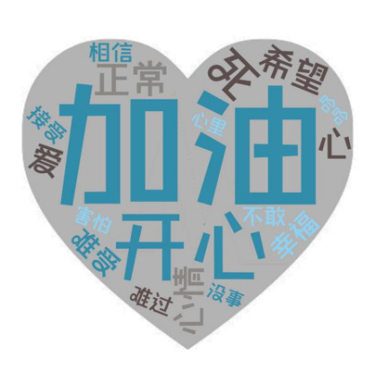
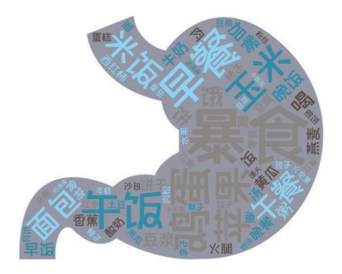
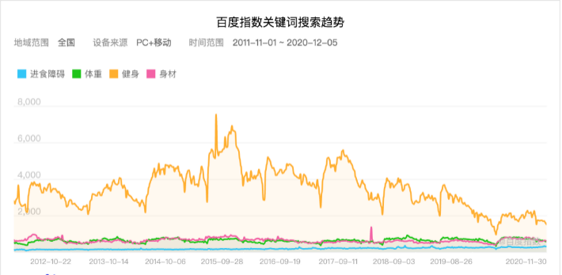
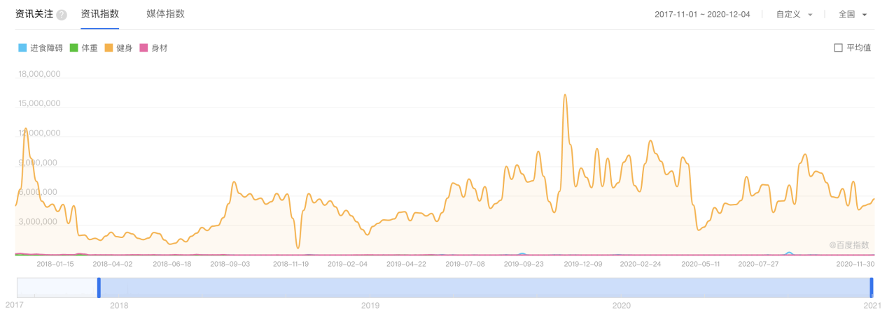

进食障碍，即Eating Disorders（ED)。在中国精神障碍分类及诊断标准中，进食障碍分为神经性厌食症及神经性贪食症。数据显示[1]，全球患有神经性贪食症的患者人数在2017年已达到12,509,656人，高收入地区的患者人数达到了全球患者人数的27.4%，中国的患者人数也达到了全球患者人数的12.93%。
在20~24岁的女性群体里，每十万人中至少有83人是神经性贪食症患者。神经性贪食症多发生在青少年晚期及成年早期。
从表面上看，19岁的张张看起来比同龄男生更瘦削。事实上，身高172cm的张张，体重只有92斤。然而在张张舍友的眼中，张张是一个“很能吃”的人。张张并不是吃不胖的人，而是靠着不停的“生”，维持着自己的低体重。
“生”是暴食症患者群中的一个专业术语，与“撸”相对应，“撸生”简称“LS”，指的是毫无节制的进食，随后通过各种方法将摄入的食物排出体内。
年仅19岁的张张，一年前开始正式成为一只兔子。
“兔子”是暴食症患者们对自己的称呼，除了“兔”与“吐”谐音之外，在他们眼中，自己就像一只兔子，在世俗的眼光中四处躲藏。
至于为什么会患上暴食症，张张自己也不甚清楚，但他觉得“可能是因为过度节食减肥”。在患上暴食症的一年中，张张在自己的研究和“兔友们”的帮助下，摸索出了一套最适合自己的、足以应对各种食物的催吐方法。
“我是小蛋糕爱好者，但是小蛋糕太容易沉了，也很难生出来，每次都要用很多酸奶打底。”张张这样介绍自己的催吐方法之一。
“沉”指的是食物沉在胃底，难以吐出；“打底”指的是在正式进食之前，先摄入一些其他液体类食物，便于催吐的时候能将胃里的其他食物全部吐出。
当然，在兔子们当中，类似的专业术语还有很多。“g”指的是催吐管，“刷水”指的是通过喝水达到洗刷肠胃、食道，让催吐过程更为顺畅的目的；“SD”指的是最常见的催吐方法之一----抠吐法，通过刺激舌根来产生恶心的感觉；“ZR”指的是不使用催吐管或其他外力，就能让吃进去的食物自然地流出......
张张清楚地知道自己和别人不太一样，所以他尽量把自己的兔子耳朵藏起来，不让人发现。
张张曾经交往过一个男友，但在确定关系后的三天内，张张光吃东西就花去了男友三千元，在男友发现他的异常之前，张张“很识趣地滚了”。
对于发烧到38.2°c，仍然要坚持撸生的张张来说，如果让他在一段亲密关系和畅快的撸生中二选一，他宁愿选择舍弃亲密关系。
由于缺少适当的干预及援助措施，神经性贪食症的患病人数一直在增长。2017年全球患有神经性贪食症的患者人数与2010年相比增长了12.98%；在中国，患病人数增加了114.49%；在美国和西欧，患者人数增长也超过了98%。
对于“兔子们”来说，他们清楚地知道自己和其他人不同，所以他们往往会藏起自己的兔子耳朵，把控制不住暴饮暴食，又想尽一切办法排出食物的自己隐藏起来。
摘下他们的面具后，其实我们身边的“兔子们”，比我们想象中多得多。
像张张一样，有不少患者都是因为过度节食减肥而患上了神经性贪食症。流行病学调查显示，减肥是进食障碍发病机制中主要的危险因素。随着减肥次数的增加，进食障碍的患病率也随之增加。美国宾夕法尼亚大学的神经科学家Tracy Bale的新研究表明，节食会使大脑对压力和高脂肪、高卡路里的食物奖励更敏感。大脑的这一种特殊变化会一直持续到节食行为结束，在节食行为结束以后也会刺激健康状态下的人暴饮暴食。
除了节食减肥以外，神经性贪食症与遗传也有着一定的相关性。所有的进食障碍实际上都是高度遗传性疾病，如果父母中有一方有进食障碍，那么后代患有进食障碍的可能性也偏高。
美国精神医学学会所出版的《精神障碍诊断与统计手册（第五版）》将神经性贪食症、神经性厌食症以及暴食症认定为三种主要的进食障碍类型。神经性贪食症和暴食症都以暴饮暴食行为为主要特征，但区别在于神经性贪食症患者会出现一些不适当的补偿性减肥行为，例如：催吐、滥用药物等。
在兔子们中，催吐是最为常见的排出食物方法之一。催吐的关键在于用硬物刺激咽喉部位，可以是手指，压舌板，甚至是催吐管，从而使机体产生反射，引发呕吐反应。有些人也会在进食前摄入大量液体，例如：水、红酒、酸奶等，达到使催吐过程更加顺畅的目的。
有相当一部分患有神经性贪食症的患者，他们看起来与普通人无异，但由于长期催吐，他们的手上往往会出现一块催吐时上牙齿磕到手导致的小小疤痕，其中有些人还会出现颊部唾液腺肿大的情况，催吐造成的胃液倒流甚至会腐蚀他们的牙齿。
神经性贪食症的女性患者，在长期饮食失序的情况下，内分泌也会失调，从而造成月经不调或停经。
神经性贪食症所带来的伤害不只局限于身体上，心理上的创伤更让兔子们痛苦。神经性暴食症会带来内分泌紊乱以及间歇发作性的暴饮暴食，神经性厌食症患者则通过限制自己的进食行为来获得心理满足。更有数据表明[3]，有8% 的神经性贪食症患者会转变为神经性厌食症。进食障碍的几种病症存在相互转换的几率，不同的症状的变换更让进食障碍患者备受折磨。
随着进食障碍一同降临在患者身上的，还有一系列精神类并发症。实际上，进食障碍是致死率最高的精神类疾病。在患有神经性贪食症的女性患者中，有超过54%的患者患有焦虑障碍，超过46%的患者患有情感障碍。在患有神经性贪食症的男性患者中，患有焦虑障碍的患者比例比女性略高，达到了56.9%；患有情感障碍的患者比率低于女性，达到了37.9%。
虽然具体患病比例有所不同，但不论是在男性患者群体中还是女性患者群体中，焦虑障碍和情感障碍都是最常见的精神类并发症。有数据显示，高达7.35%的神经性贪食症患者会出现自残行为[2]。
我们对相关的百度贴吧（暴食吧及绊吧）及微博暴食症超话中的文本内容进行了分析，并制作了以下三张高频词词云图。
数据来源：百度贴吧


兔子们的感受几乎完全围绕着“我”、“你”、“自己”、“吃”和“瘦”。他们在网络上分享自己的感受，也分享自己的暴食日常。除了在网络上除了相互鼓励之外，兔子们还会相互分享自己积极或消极的情绪。他们中有不少人仍然对生活抱有希望，但也有很多人想到一死了之。
在国内，进食障碍仍然没有得到其应有的重视。
百度指数关键词搜索数据（2011.11.1-2020.12.5）显示，在全国PC及移动百度客户端，搜索“健身”的频次远远多于搜索“体重”、“身材”及“进食障碍”。在这其中，搜索“进食障碍”的频次少之又少，大众对于进食障碍的了解也不甚深入。
数据来源：百度指数

通过筛选2017.11.1-2020.12.4期间，百度中与“进食障碍”相关的资讯数量，可以看出媒体对于“进食障碍”的关注度也极少。
数据来源：百度指数

除了关注度和了解度低之外，进食障碍的就诊率同样很低。数据显示，寻求正规医疗帮助的进食障碍患者大约只有20%，同时，大部分的进食障碍患者在病情晚期才选择就诊，大大提高了医疗难度。
实际上，进食障碍患者们也给社会带来了不小的经济压力。根据美国EDs经济成本报告，我们制作了以下两张图表。仅在2018-2019年，进食障碍给美国带来的财务总费用达到了64亿美金。其中，平均在每个神经性厌食症患者身上的花费最高，达到了27,359美元/人。为了治愈进食障碍症患者，家庭、政府、雇主、社会以及个人都付出了大量的金钱。其中，个人承担的治疗费用占比最高，达到了29%。高额的经济支出也是导致就诊率低的重要原因之一。
截至目前，中国并没有关于进食障碍的全国性流行病学调查数据。目前，国内设有进食障碍专科的医院仅有2家。 然而，我们在好大夫网上，查询到了以下20家推荐医院，虽然这些医院中有18所医院都未开设进食障碍专科门诊，但仍然有相对丰富的就诊经验。北京、浙江、江苏是推荐医院数量最多的前三个省市，分别有11所，9所以及7所。
浙江省有9家三级甲等推荐医院，是三级甲等推荐医院数量最多的省份。 同时，我国也有一部分对于进食障碍治疗有丰富经验的医生，获得了患者们的一致好评。其中，北京市的好评大夫数量最多，达到了10位；其次是浙江省，达到了7位。
从以上医院和大夫的资料可以看出，我国目前诊治进食障碍的主要力量集中在北京市，对于更重视诊治效果的患者而言，可以选择赴京就诊。 作为国内最早开设进食障碍专科的医院，上海市精神卫生中心2002年仅收治一位住院进食障碍患者，门诊就诊进食障碍患者仅8人次。2012年后，就诊病例显著上升。2016年，上海市精神卫生中心接诊进食障碍患者1100余人次，2019年接诊进食障碍患者2700余人次。 高速增长的就诊人数实际上也反映了高速增长的患者群体。以神经性贪食症为例，我国的患病人数一直远超世界均值。然而，我们在好大夫网进行了搜寻，目前我国可以治疗进食障碍的医院仅有 72所，远远无法满足病患的需要。医疗资源的欠缺在一定程度上加大了患者就医的难度。
值得注意的是，我国对于进食障碍的定义与国际定义亦有所不同。 在《精神疾病诊断与统计手册DSM-IV》中，国际公认的进食障碍可分为神经性贪食、神经性厌食、暴食症。 而在《中国精神障碍分类及诊断标准（CCMD-3）》中，我国将进食障碍分类为神经性贪食症、神经性厌食症以及常见儿童进食障碍，在一定程度上忽略了对暴食症及神经性贪食症的区分。
虽然进食障碍在精神疾病中属于小病种，但它所带来的的高伤害和高损失，无时无刻不在向社会呼吁更多的目光与关注。 进食障碍患者们承受着心理、生理上的双重痛苦，除了医生之外，我们也能尽我们最大的努力去帮助他们。了解进食障碍，关爱进食障碍患者，不戴有色眼镜看待他们。当他们从进食障碍的裂缝中破土而出，长出的也会是最雄壮的大树。 如果你怀疑自己患上了进食障碍，不要逃避，也不要害怕，你可以试着回答SCOFF，这是目前临床公认有效的进食障碍自测方法。 . 我是否因为吃得过多，导致自己恶心呕吐？ . 我是否担心自己食量失控，担心自己暴食？ . 我是否在三个月内，体重减少超过6.35kg？ . 我是否觉得自己胖，即使别人说我很瘦？ . 我是否觉得食物在我的生活中占了主导地位？ 针对以上五个问题，如果你回答“是”的问题少于两个，那么恭喜你，你并没有受到进食障碍的干扰；但如果你回答“是”的问题多于或等于两个，你可能就已经被进食障碍所影响了，需要尽快去医院就诊，尽早对病情进行干预。
帮助他们，也帮助自己